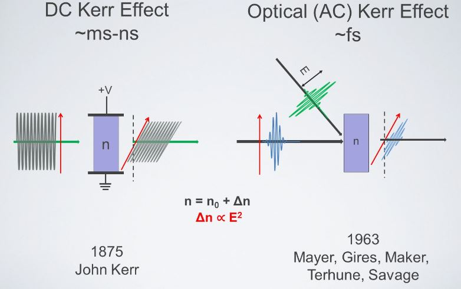
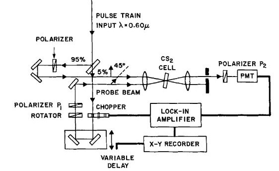

Portioning is an autocorrelator using the KERR AC effect.
The KERR effect can be (DC) or (AC)

The KERR effect is a variation of the second-order refractive index that can be produced by an electric field in liquids, solids and gases.
TheKERR DCeffect occurs by submitting between two plates a high voltage pulse (several kilovolts) in an insulating liquid having a significant second order refractive index such as nitrobenzene, carbon disulfide with a response time in the domain from ms to ns .
TheKERR AC
The autocorrelator with Kerr AC effect makes it possible to analyze laser pulses temporally.
The picosecond pulse train emitted by a dye laser at 600nm hits a splitter blade to obtain a first beam which is the analyzer containing 95% of the energy that passes through a polarization plate, then is directed to a lens focusing in a bowl containing carbon disulfide, which will induce an induced transient anisotropy that goes by changing the refractive index n 2 produce a rotation of the plane of polarization.
The second arm of the autocorrelator is used to measure the laser pulse. The 5% of the light is directed on 2 mirrors mounted on a movable plate allowing to modify the length of the 2nd arm so as to shift temporally the 2 pulses. After passing through a rotator and a polarizer P1 the beam is directed towards the focusing lens and after passing through the CS 2 bowl it is analyzed on the polarizer P2. A photomultiplier sends a signal to a "lock-in amplifier" that allows to see the shape and duration of the pulse on an XY oscillo.

The realization of the experiment is being prepared ....... photos and measurements will follow!